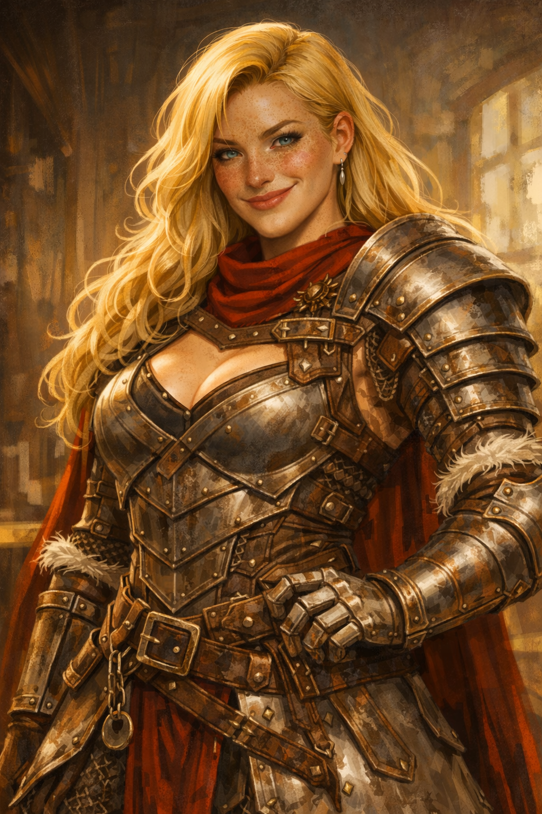

Salynna "Sally" Tarrant¶

“Break the rules. Keep the oath.”
Sally was rejected by her noble family for being "unladylike", and sent to a boarding school, where she stole cutlery for ten full years before she found her purpose in life; now she is the ultimate bodyguard, if you don't care about a private life, and smothers her Ward with equal amounts of competence, cold steel and charlatanery.
Keywords: Bravado, trickster, roguish charm, bodyguard, reflavored Oath of Redemption
Character Overview¶
- Species: Human
- Class: Paladin 5 (Oath of Redemption)
- Background: Charlatan
- Age: 25
- Alignment: Chaotic Good
Quick Intro
At the Table
- [Core personality trait]
- [Social behavior or catchphrase]
- [What they want or fear]
- [Role in Party dynamic]
Backstory (Short Form)
[2-4 sentences. Enough to know where they came from and why they're adventuring.]
Playing [Name]
- Combat: [1-2 sentences on tactics/role]
- Roleplay: [1-2 sentences on voice, mannerisms, social approach]
- Party Synergy: [1 sentence on how they mesh with others]
Deep Dive
Backstory¶
The house Tarrant is a noble family. Salynna is very much not a noble character. At 15 she had already made herself an absolute headache at home, failing to learn her noble etiquette, kissing boys from the wrong social classes behind the stables and having a bad habit of stealing silverware. She was also growing unreasonably strong for her age, and decidedly unladylike to boot: tall, muscular and curvy, a dominant physique more suited for a rowdy tavern than the royal court.
So she was sent to Light's Redemption, a prestigious boarding school ran by an internationally renowned monastic order, high up in the mountains and functionally cut off from the world. The first year, she learned nothing. So her family paid for another year. On the second year, she learned how to embezzle cutlery from the students' canteen and sell it. On the third year, she made a business of selling off the things newly departed students had left behind when they moved out. Soon, "Sally" was the girl every student came to for aid with all their problems. Whether it was getting a sneak peek at the exam paper questions or smuggle a love letter to the right recipient, Sally knew how. Or found a way.
The Tarrants couldn't well take her back as the years went by. They could only hope she'd finally learn and come back reformed. Sally was on her tenth year, and basically an inventory item, trapped in a small cloistered environment she had made her own. But she was also very much "the odd one" at campus. Part student, part... something else. At 25, she had drifted far from the younger students. Until she met someone...
Sally is made to be a Paladin with a twist. She's met someone at the academy who became so special to her that she's willing to lay down her life for them, basically turning her entire life around. Now they're her sacred Ward, and she will employ an absolutely spectacular toolkit of both brawn and trickery to keep them from safe from all harm.
Speak with your fellow players and synchronize your backstories, to decide whom in your party Sally has decided to devote her life to keeping safe, and why. This part is left open in order to allow you to decide between yourselves how it should play out, according to the characters and backstories available at your table.
Personality¶
Sally is a weird paladin, as far as pallies go. She's an opportunist and a trickster, bringing roguish charm to everything from negotiations to bar fights. Even though she has the tactical mind of a professional charlatan, she loves flirting, joking and carousing along with the martials. Play Sally if you want a devoted bodyguard with a clear purpose who still knows how to have a good time—and whose definition of 'protection' might occasionally need discussing.
Leaving the monastery for the first time would be a harrowing and deeply scary experience for Sally. She was sent to monastery jail for ten years and carved out her own niche in the mountains, but now she needs to truly apply herself. The first time she needs to protect her ward, or the party her ward decided to travel with, may be when she first realizes exactly what she signed up for.
Sally without a cause would be running cons in the student cafeteria until she's 50. Sally with a cause however, is a person cheerfully throwing herself in front of swords, fire breaths and eldritch blasts. That's not a flaw she needs to overcome. On the contrary, that's her whole engine, and it's dangerous, not because Sally would be willing to die for someone. Rather, It’s that she might decide, without asking, what they need saving from.
Sally needs external purpose or she calcifies. Give her a mission and she's unstoppable. Take it away and she'll build another comfortable cage. She's externally motivated by nature, which makes her both intensely loyal and potentially terrifying, because what happens if her purpose disappears?
If you want to increase the depth and the drama at your table, Sally could have some problematic older sibling traits that invite dynamic play in your group. She' could be the one who "handles" problems before they reach her ward. The one who decides what they need to know, and who smothers with care while calling it protection.
She makes tea and makes sure her ward is always warm and comfortable, but she also stalks the tavern wench or servant who made her ward uncomfortable or behaved in any way suspiciously. She's not sinister about it, she genuinely cares, but a bodyguard-trickster with an obsessive work ethic is one bad day away from doing something her ward never asked for and can't take back.
The house Tarrant may indeed be happy that Sally finally wandered off. But should she ever cross paths with them again, that may awaken many painful questions about rejection. She is who she is: Big, rambunctious and generally kind-hearted, and they apparently could never forgive her for that.
One of the deepest and most difficult questions, for more character driven roleplay: what is Sally's deepest fear? Scale. The world getting too big, too uncontrollable. Threats she can't anticipate. She came to the monastery, built herself a throne and then just sat there in a space small enough to control completely. Now the Oath is her new cage, but she's the one holding the key. The Ward may grow beyond her ability to protect them, or worse, one day they might not even need protection anymore. And if the Ward doesn't need her, then Sally's just... what? A 25-year-old failed student ex-embezzler with a hammer and nowhere to be.
Sally probably knows, on some level, that she's doing it again. Building another monastery operation. Another small but legible place where she gets to be essential by making herself the only solution. The Oath gave her divine power, sure, but it also gave her permission to never have to figure out who she is without a job to do.
Personality traits Solving problems is half the fun. Making trouble is the other half.
Ideals Loyalty: The one person who saw me doesn’t get to regret it. Ever.
Bonds Ward is more important than life, light, dignity. The monks at Light's Redemption may have an ambivalent love for her. It's nice that she's gone, but she did bring a lot of life to the place.
Flaws I know I can be a lot, and I'm done apologizing for it. If we can't agree I'll just carve out my own existence somewhere else.
Sample quotes¶
"'Keep the promise, break the rules.' Yep, it's part of my oath. Dunno why it gave me superpowers, but I'm not looking a gift horse in the mouth."
"See that person over there? That's my ward. Anything happens to them, I'll be turning this market upside down. I'm not saying you look like a pickpocket, let's just say I'm generous with my thoughts today."
"Your lips are turning blue again. Take my blanket. I'll make tea on our next short rest."
"Eating with an old iron fork? That's just rust poisoning waiting to happen! A man of your stature should be eating with silverware, at least! Can I interest you in this set of cutlery? I stole it myself from a merchant, honest work."
"Okay look, I'm sorry I stalked you through the whole night and huddled under that girl's window for two hours. I promise I didn't listen! I mean not exactly. You hear what you hear, right? Besides, it was only to keep you safe! Aren't you at least a little glad I did? I told you there's a Dhampir threat in this city, and she started to sound really weird by the second hour!"
"The hell you want to dredge up family for? Fuck them! They always told me I was too much. Too loud, too rowdy, too goddamn 'vulgar'. Like I'm meant to grovel to my own family for having a body? At the monastery at least I could look and mouth off however the hell I pleased, and those little shits still queued up by my door begging for favors."
Playing Sally¶
Reflavor the Oath of Redemption from "Divine Peacekeeper" to "Personally invested bouncer". Why the Gods accepted her oath she does not know, and rightly does not care much about. As long as they provide her with the power to shut down any threat to her Ward, she's all for it. This is her life now, and she has so many years of purposeless existence to make up for. The Redemption Paladin can take damage for others, reduce threats, buff allies and work as secondary healer if need be. She may not be a perfect fit for the subclass looking at the exact tenets of the Oath of Redemption, but keep the sub-class in its entirety and rework the tenet: Protect Ward at all costs.
The Ward needs to be someone who can give Sally something to actually, truly believe in. Whatever grants her these powers, the Oath needs true conviction. She needs to feel like this is her chance to become something more, or to give her life to something that feels right in every bone of her body. And that suggests that an idealist has lived in there all the time. But it didn't have any oxygen before. It was smothered in monk jail.
Suggestions for what the Ward relationship could be:
The Idealist – Ward believes in something Sally never dared to. She borrows their certainty. The Fragile One – Ward is competent but wounded or in some capacity disabled. Sally overcompensates. The Mirror – Ward is independent, maybe even reckless. Sally protects against their freedom.
Fighting style: If your Ward has low AC, it's better to switch out Protection for Interception.
Mechanical build and PDF download¶
Level 5 Build
| STR | DEX | CON | INT | WIS | CHA |
|---|---|---|---|---|---|
| 16 (+3) | 10 (+0) | 14 (+2) | 8 (-1) | 12 (+1) | 16 (+3) |
Combat Stats¶
| AC | HP | Hit Dice | Speed | Initiative | Prof. Bonus |
|---|---|---|---|---|---|
| 19 | 54 | 5d10 | 30 ft. | +0 | +3 |
Saving Throws: Wisdom: +4, Charisma: +6
Proficiencies¶
Skills: Athletics +6, Deception +6, Intimidation +6, Perception +4, Persuasion +6, Sleight of hand +3
Armor: Heavy Armor, Light Armor, Medium Armor, Shield | Weapons: Simple Weapons, Martial Weapons
Tools: Forgery Kit, Thieves' tools, Playing cards | Languages: Common, [+2 common languages]
Feats¶
- Heavy Armor Master: Reduce damage from any PBS attack by PB (3).
- Skilled: 3 additional skill/tool proficiencies
Fighting style¶
Protection
Weapon Masteries¶
- Warhammer (Push)
- Handaxe (Vex)
Equipment¶
Splint Mail, Warhammer, 4x Handaxe, Shield, Forgery Kit, Thieves' Tools, Playing Cards, Guardian Emblem (nullify crit vs any creature within 30 ft, 3 times/LR), one bent silver fork memento from her time of embezzling cutlery at Light's Redemption.
Spell list¶
Level 1 Sanctuary, Sleep, Compelled Duel, Cure wounds, Detect Magic, Divine Smite
Level 2 Calm Emotions, Hold Person, Aid, Shining Smite, Warding Bond, Find Steed
PDF Character Sheet¶
Session Zero Considerations
Player-driven Ward dynamic: The Ward relationship is deliberately left open for collaborative worldbuilding. The player of Sally and the player of her Ward should work together to define boundaries, expectations, and the nature of their bond before play begins.
Sally is built to be a charismatic, roguish Paladin who for the first time in her life believes in something. If you're going to play her as full "toxic helicopter mom" you need to okay this with the table, and especially with your assigned Ward. You and your fellow player will be essential to each other with these characters, and must make sure you're both on board with this scenario and dynamic.
A good idea is to invite the table to help you know where the line is. This gives your fellow players express permission, allowing them to feel safe to let you know if Sally accidentally crosses it.
Family rejection and self-worth issues: Players uncomfortable with themes of parental/familial rejection should be aware.
Body positivity and dealing with stereotypes: Sally is explicitly described as "tall, muscular and curvy"—a body type her noble family deemed "unladylike" and shameful. Her story affirms that there's nothing wrong with her body or being in the world. Still, here's the heads-up: Sally has many layers, but can easily fall into the stereotype of big, beautiful and boisterous women. It is strongly suggested that you at least take it up at session zero and make sure you're all on board.